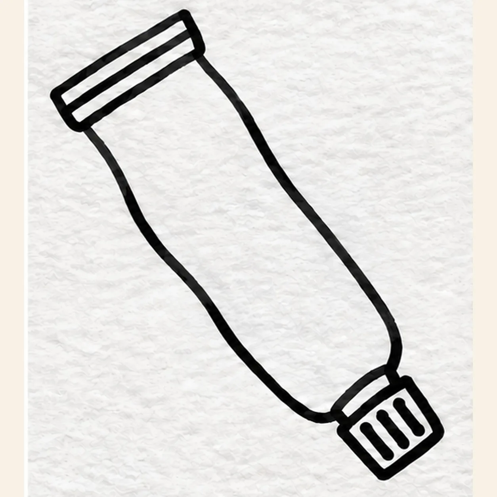
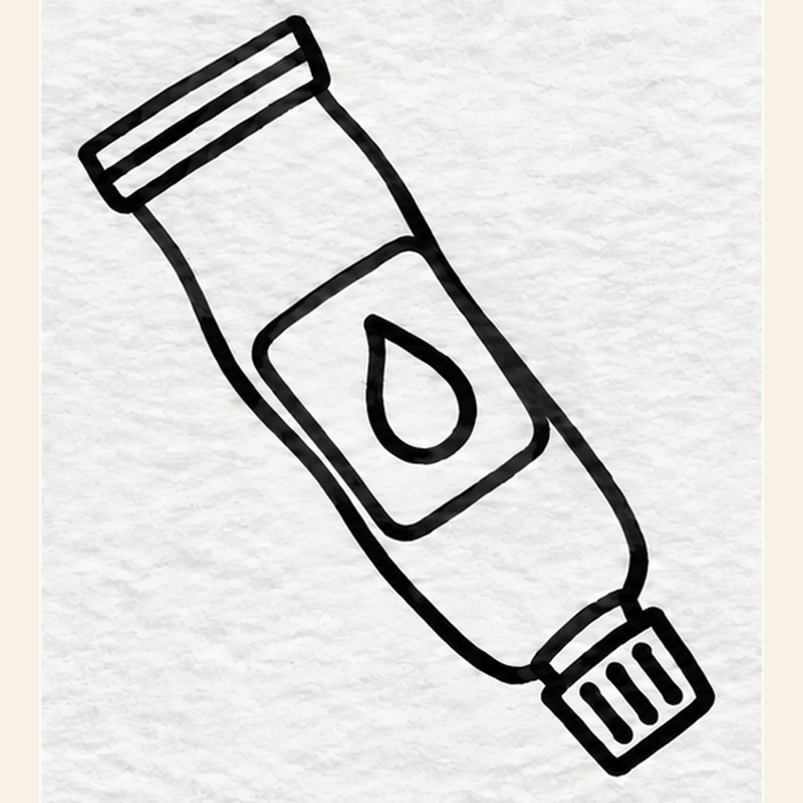
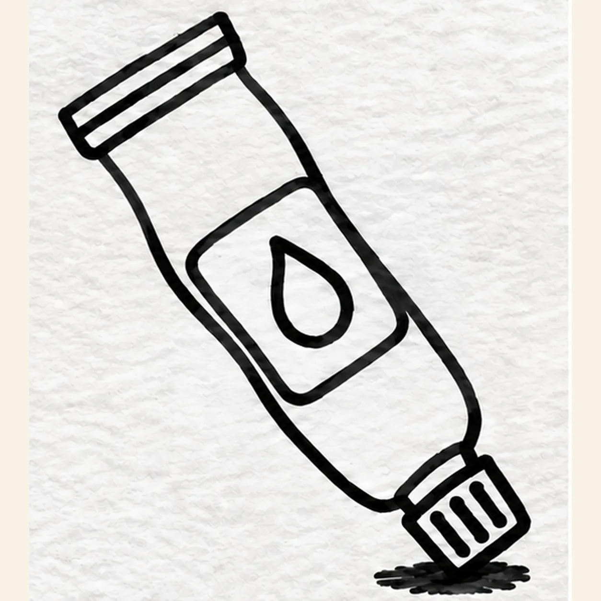

Felt-tip marker mode
Let's draw a paint tube
Treat this as one playful practice round: sketch the idea loosely, simplify the shapes, then commit with confident marker outlines and bright fills.
-
01

Draw the complete tube silhouette
With black felt tip, draw one long tapered squeezed tube diagonally from upper left to lower right. Close its broad end with a folded crimp; at the narrow lower-right tip, attach a small squared cap with exactly three short ribs.
Marker tip: Set the cap on the same diagonal as the tube. Count three ribs before drawing anything inside the blank body.
-
02

Place the paint label
Inside the broad middle of the fixed tube, draw one rounded rectangular label following its tilt. Center one teardrop emblem inside, keeping a paper gap between the label and the tube edge.
Marker tip: Keep one clear paper gap between label and tube edge, and make the drop large enough to read at thumbnail size.
-
03

Ground the paint tube
Below the lower-right cap, place one short broken black shadow. Keep the crimp, three cap ribs, label, and drop fixed; leave the red body blank until the color step.
Marker tip: Keep the shadow short and directly under the cap. It should support the tube without becoming a dark puddle.
-
04

Fill the marker colors
Fill the established tube coral red, the label warm yellow, the single drop turquoise, and the cap deep violet. Leave two narrow shine streaks and one tiny shine spot as open paper on the tube, show directional marker strokes, and preserve the existing shadow and black contours.
Marker tip: Pull red strokes along the tube length and keep some paper grain. Count one drop, three cap ribs, two longer white streaks, and one tiny shine spot.